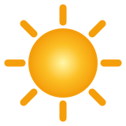
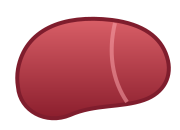
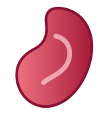
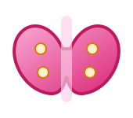
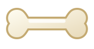

Homeostase basalEquilíbrio entre absorção intestinal, osso, rim e regulação hormonal.
Estratégia do gráfico: curvas com amplitudes, atrasos e estilos distintos para reduzir sobreposição.





Como interpretar:
Sol e Pele (Captação): A radiação UVB converte o 7-deidrocolesterol em Vitamina D3, iniciando a cascata.
Fígado (Estoque): A D3 é transformada em 25(OH)D (Calcidiol), principal forma circulante e marcador clínico.
Rins (Ativação): Sob ação do PTH, ocorre a formação do 1,25(OH)₂D (Calcitriol), forma ativa.
Intestino (Absorção): O calcitriol aumenta a absorção de Ca²⁺ e fósforo.
Hormônios (Controle): Queda do cálcio estimula PTH; elevação estimula calcitonina.
Ossos (Equilíbrio): Funcionam como reserva, liberando cálcio para manter a homeostase.
Estados clínicos: Hipocalcemia causa hiperexcitabilidade; hipercalcemia associa-se a cálculos e arritmias; hiperparatireoidismo leva à perda óssea; hipoparatireoidismo reduz o cálcio sérico; baixa exposição solar reduz a síntese de D3.